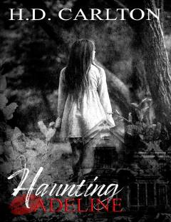

HAQorong'u va sirli voqealarga boy ta'sirli roman.
Haunting Adeline - H. D. Carlton qalamiga mansub qorong'u (dark) romantika janridagi mashhur roman bo'lib, unda ta'qib, murakkab munosabatlar va og'ir ijtimoiy mavzular yoritilgan. Kitob o'quvchilarni o'ziga rom etuvchi syujet va kutilmagan burilishlarga boyligi bilan ajralib turadi. Asar muallif tomonidan ogohlantirilganidek o'ziga xos keskin voqealarga boy.